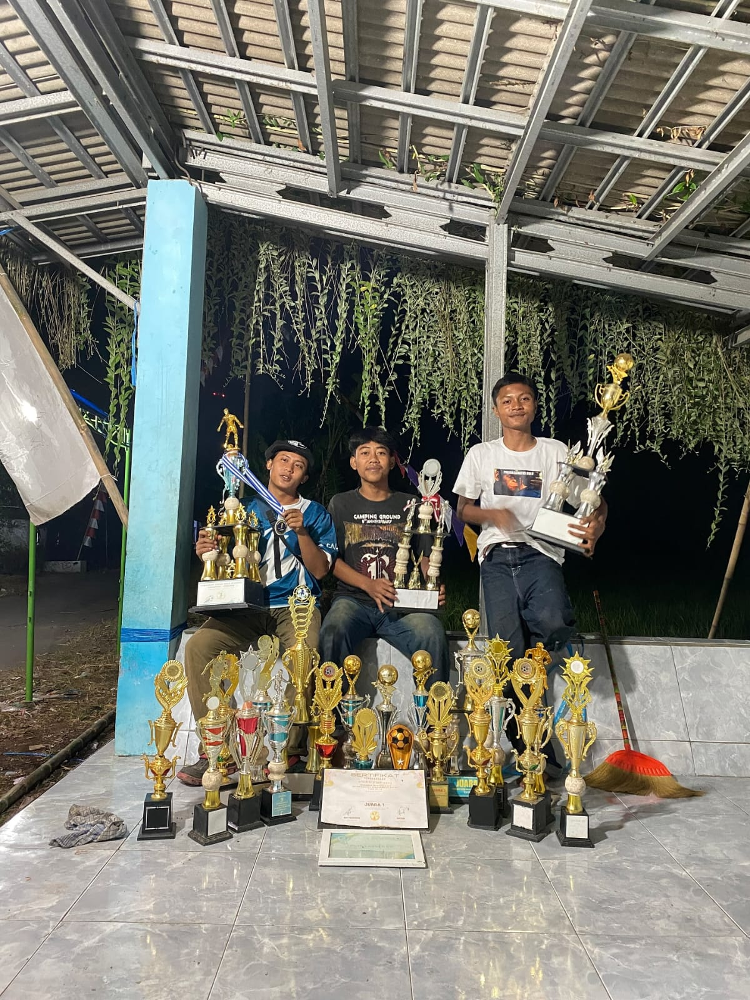
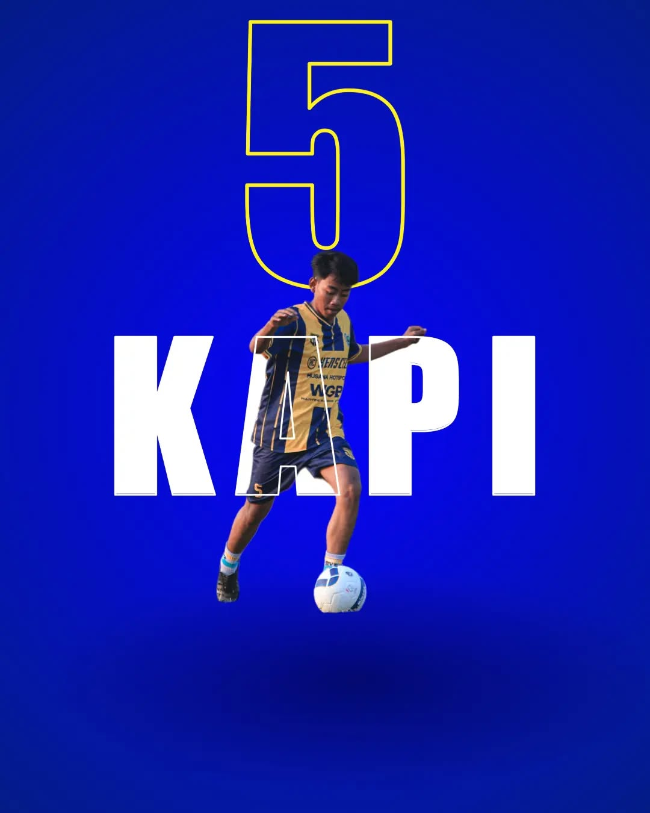
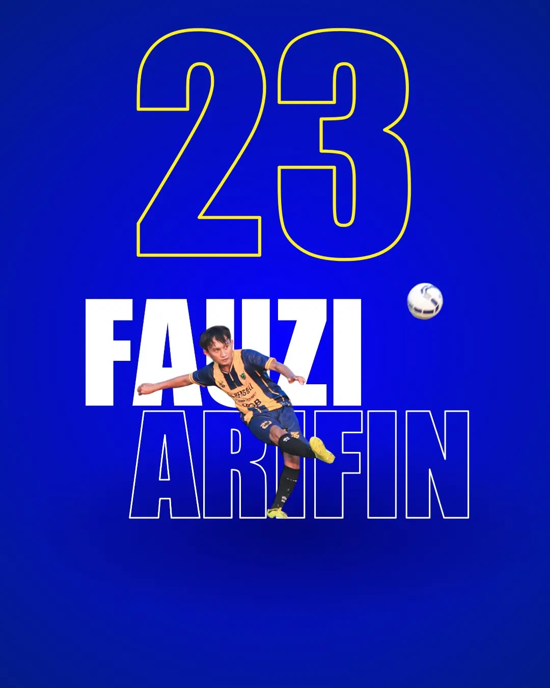

Prestasi Tim & Individu

🏆 Rekap Kejuaraan Besar
- 3x Juara Liga Regional (2020, 2021, 2022)
- 3x Runner-up Liga Regional (2017, 2018, 2019)
- 1x Juara Turnamen Liga Matahari (2023)
- 4x Tim Fair Play Terbaik

Young Player
Best young Player Of The Season

Young Player
Best young Player Of The Season.

Top Scorer
Top Scorer with 7 goals in 1 tournament.